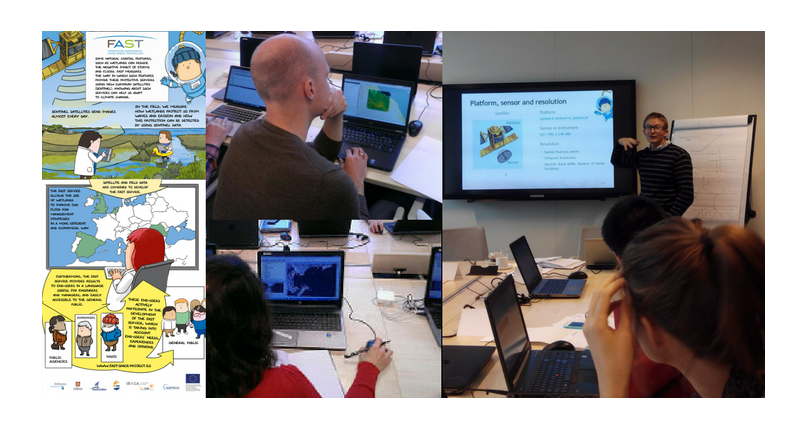

Consultation, Innovation, Development, and Engagement
Remote Sensing Big Data Analytics
using Sustainable Open Source Solutions
About
provides Earth Observation Data Science services using Open Source software.
About you
As innovators, thinkers, and dreamers who share the belief that
integrity and transparency are key to building a sustainable future,
sometimes you find that implementing your great ideas requires a little help.
About me
I love new challenges and am dedicated to the principles of Open Science.
My name is Edward P. Morris Ph.D and EO4
is the name of my consultancy (Earth Observation For); born from 18 years of research experience, an obsession for Open Source, and my awakening to the potential of EO Big Data during the EU project FAST.

About EO4
Like many good things EO4 started from a conversation (over a Romanian beer!) about the many innovative things that could be done for global Good with the vast amounts of Earth Observation data out there.
The only thing holding us back from ‘going global’ (we had plenty of enthusiasm) was the technial challenge of how do to extract the right information, and make it accessible to others…
Being an long-time R user, dedicated to Open Source solutions, and recently introduced to the power of Cloud Computing, I began to learn, program, develop, and teach others, until years later diverged from a purely academic career to try a different approach to solving real-world challenges.
So with the support of the FAST team, University of Cádiz, and FUECA, EO4 was born, with the aim of helping to transform great ideas into sustainable creations using Earth Observation Data Science.
Foreshore Assessment using Space Technology (FAST)
FAST (EC-FP7-607131, 2014 - 2018) developed down-stream services (MI-SAFE) for the European Earth Observation Programme Copernicus to support cost-effective, Nature-based Solutions for shoreline protection against flooding and erosion.
Aligning capital market actions with climate reality
Carbon Tracker is an independent financial think tank that carries out in-depth analysis on the impact of the energy transition on capital markets and the potential investment in high-cost, carbon-intensive fossil fuels.
Proudly worked with
Services
Consulting
From finding funding, selecting the right data and tools, setting up operational services, validating products, to writing reports, can provide transparent advice and support.
Development
Sometimes it takes a little innovation to develop great ideas into operational Earth Observation and modelling products. can help you design sustainable solutions using the latest data sources and techniques.
Computing
Scaling up designs for global analysis and operational services means finding the right computing resources for the job. can advise on, set up, and manage High Performance Computing facilities for the development and production of your data products.
Support
Although every effort is made to explain most our Open Source tool chains, sometimes a little bit of personalised support is desired. offers a range of technical support options ranging from remote to on-site interaction.
Training
For a long-term, sustainable future that includes Digital technologies we need to get users involved, hence offers tailor-made training in Earth Obersation Big Data, Data Science, and Reproducible Research themes, for groups ranging from educational to experts.
Cal/Val Activities
Without Calibration and Validation Earth Observation and Modeling products have limited use. can help you carry out these activities and provide industry certified Quality Assurance.
FAQ
The key ethical principles of include independence, integrity and transparency, below are some frequently asked questions.
Do I have to make my results open?
strongly believes that transparent community-based processes promote participation, accountability and trust, producing benefits for individuals, organisations and Society. We do our best to use Open Source software and Open Access data in an Open Science framework, and strive to apply this principle to the services we offer. Nevertheless, we understand that sometimes the pressures and incentives for our clients may be slightly different, in which case we seek to find an optimal comprise.
What are your rates?
The general aim of is to contribute to global Good using Earth Observation Data Science.
Because we use Open Source software and often work remotely, we can keep prices competitive, still we need to make a fair living.
In general, there is a daily rate which depending on the services, volume of work, and the client activities is applied on a task/project basis; this rate is flexible, and in terms of billing we can adapt to your procedures.
Any services with extra costs (travel, cloud storage, HPC) are transparently agreed with the client during negotiations.
Get in contact if you would like to know more.
Where can you work?
Pretty much anywhere. Most of our work is done remotely, and we can travel for short stays from our base in South Spain.
What high performance computing services do you offer?
Depending on the client status (commercial, NGO, educational), nature (development or operational) and volume of processing we will work with you to develop a transparent data management and processing plan. This may include using your or our own physical computing infrastructure, and/or virtual computing infrastructure available from public and commercial organisations. We have non-exclusive working relationships with ‘computing as a service providers’, including not-for-profit organisations, as well as commercial providers.
In case you haven’t found the answer for your question please get in contact.
Contact
is based in Puerto de Santa Maria, Cadiz , Spain. To get in contact please send a email via our contact form or a message via our social media accounts.